OASIS es un proyecto transmedia creado por seis estudiantes de la Escuela Universitaria ERAM, que plantea una historia sobre el estado de ignorancia consciente como forma de vida, sobre la intervención de fuentes externas que impiden llegar a la esencia de la realidad, y sobre la dificultad de salir de la zona de confort.
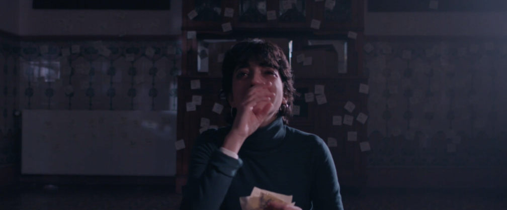Nos cuenta la historia de Ada, una chica de dieciocho años que vive con su madre Bea en una antigua casa. Les ha llegado el momento de mudarse, pero Ada prefiere vivir dormida siguiendo las rutinas que le marca OASIS, una revista semanal. Aunque no quiera, tiene que aceptar que Bea murió y ya no vive con ella.
 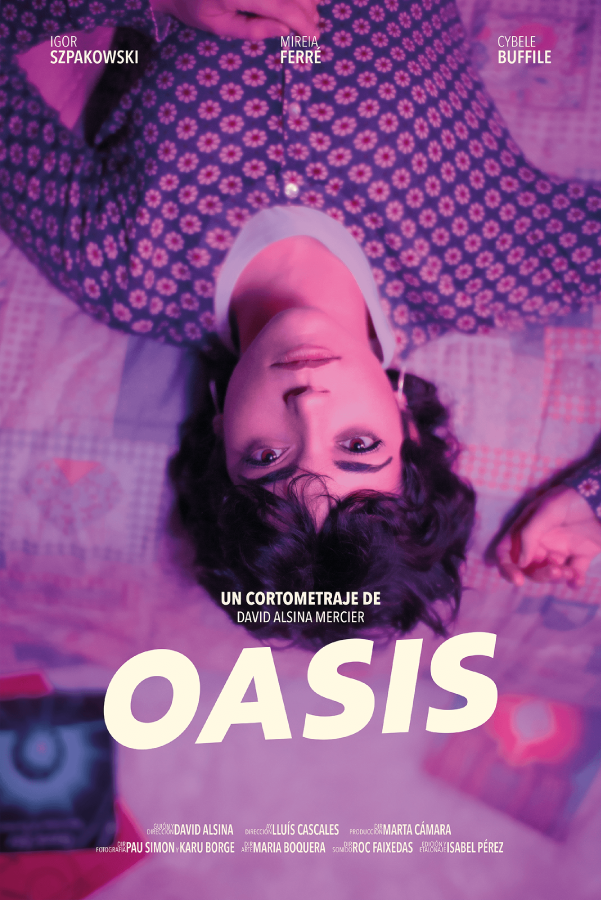
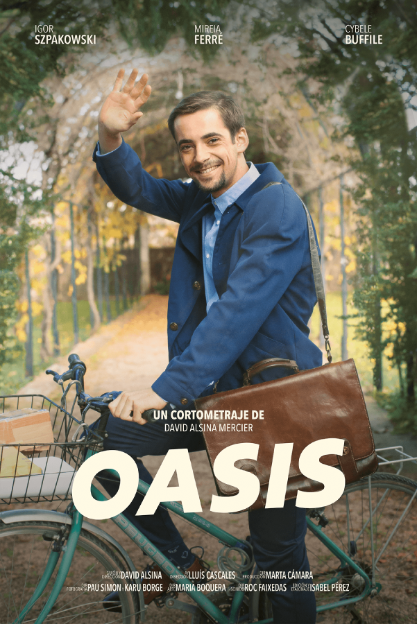
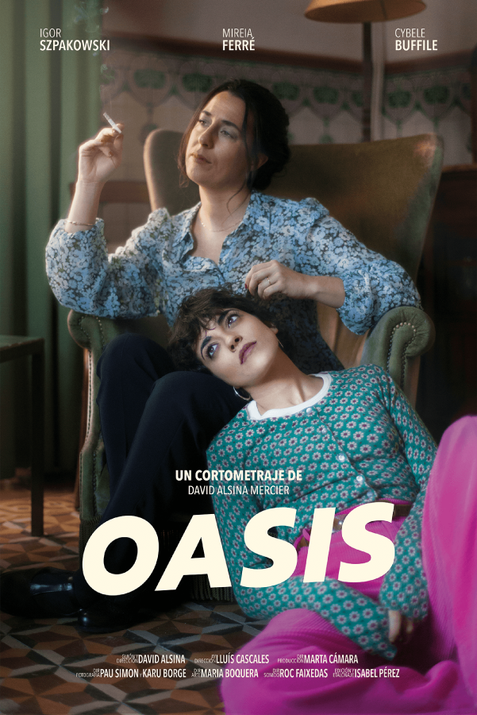
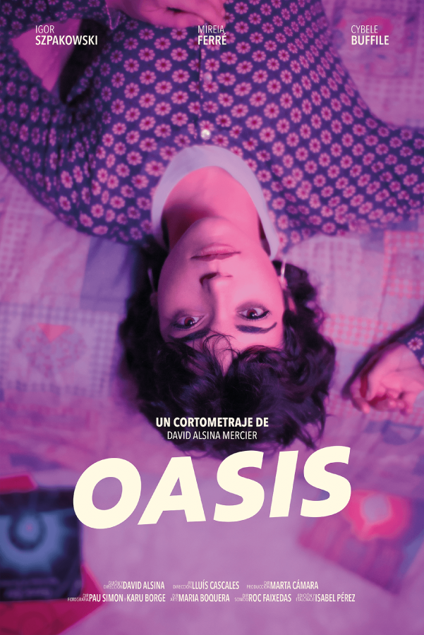
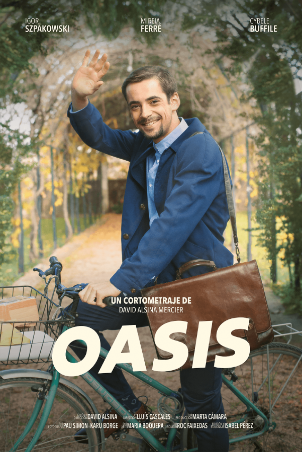
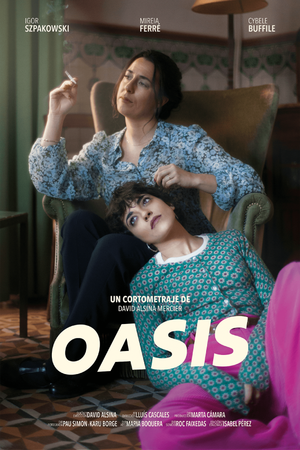
 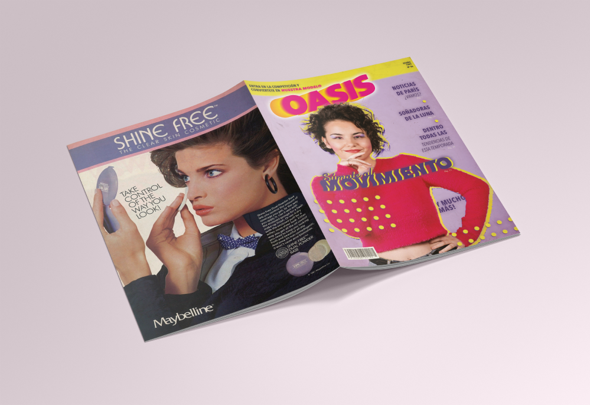
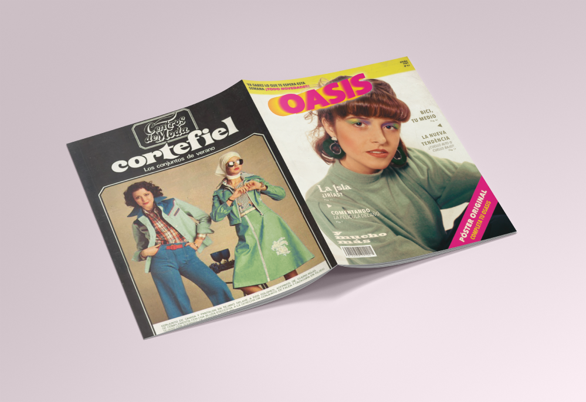
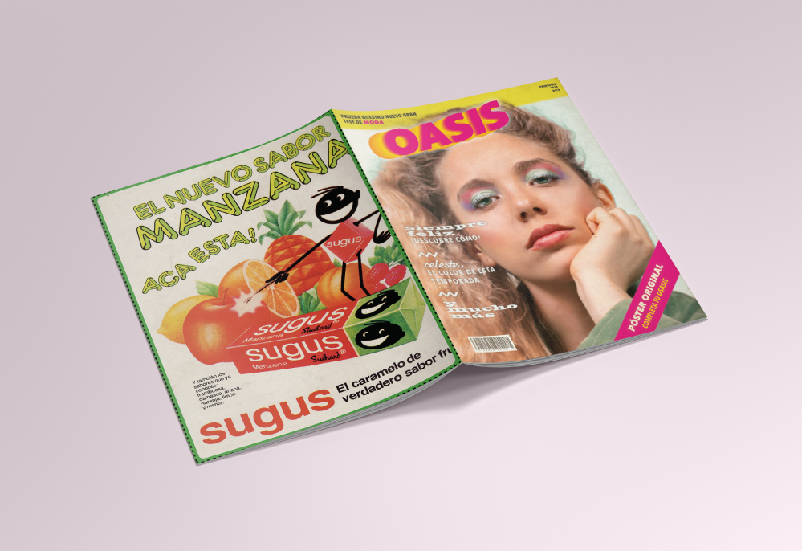
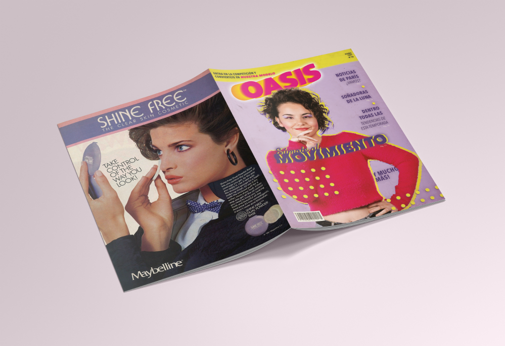
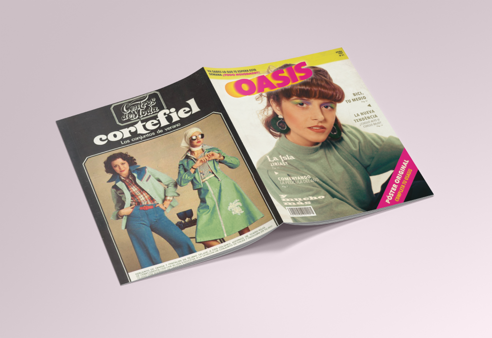
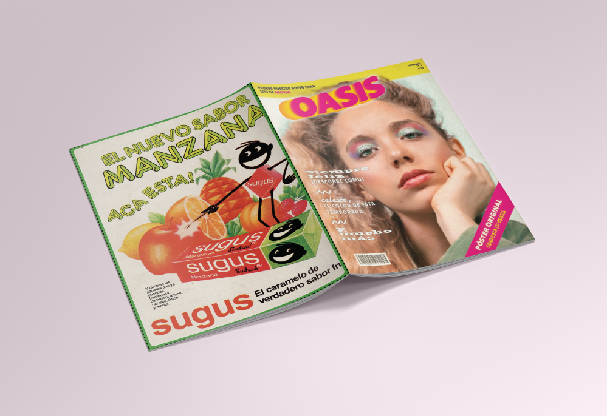
Idea, guión y dirección:
David Alsina
Directora de postproducción:
Isabel Pérez
Ayudante de dirección:
Lluís Cascales
Dirección de arte:
Maria Boquera
Dirección de producción:
Marta Cámara
DoP y responsable de transmedia:
Pau Simón